본 포스트는 서울대학교 컴퓨터공학부 시스템 프로그래밍(System Programming, M1522.000800, Fall 2026) 강의 자료 중 19강 — Concurrent Programming: Concurrency (총 34장)를 바탕으로, 강의를 처음 듣는 독자도 논리적 흐름을 따라갈 수 있도록 재구성한 것입니다. 동시성(Concurrency) 단원은 세 부분으로 나뉘며, 이 강의는 그 첫째인 Part I: Introduction, Concurrent Processes이고 Part II: Threads and Threading Models와 Part III: Races and Synchronization이 20강과 21강으로 이어집니다. 원본 슬라이드는 영문으로 작성되어 있고, 본문의 대섹션은 개요 슬라이드(Concurrent Programming → Running Example – A Concurrent Webserver → Concurrency Models → Concurrent Processes → Summary)와 다섯 장의 구분 슬라이드를 따랐습니다. 개요 슬라이드는 Concurrent Processes를 Concurrency Models의 하위 항목으로 들여 쓰고 그 구분 슬라이드에도 Concurrency Models를 작게 얹어 두었으므로, 4장은 3장에서 소개하는 세 모델 가운데 첫째를 자세히 보는 장입니다. 프로세스 기반 서버를 다루는 4장은 교재 Bryant & O’Hallaron, Computer Systems: A Programmer’s Perspective (3rd ed.) 12장 Concurrent Programming의 12.1절(프로세스를 이용한 동시성 프로그래밍)과 같은 내용이고, echo 서버 코드(
echoserveri.c,echoserverp.c)는 강의의 자체 코드입니다. 강의 자료(.pptx)에 숨김 슬라이드와 발표자 노트는 없습니다. 슬라이드의 코드 조각은 생략된 부분을 채워 macOS에서 실행해 보았고 그 결과는 해당 위치에서 소개하며, 15번 슬라이드 코드의 따옴표 오타도 그 자리에서 바로잡았습니다.
한 줄 요약 (TL;DR)
“제어 흐름을 여럿으로 나누면 무엇이 언제 실행될지를 더는 프로그래머가 정하지 못하게 되지만, 서버는 그 대가를 치르고서라도 클라이언트마다 흐름을 하나씩 붙여 주어야 한 클라이언트가 멈출 때 다른 클라이언트까지 멈추지 않습니다.”
동시성 프로그래밍은 제어 흐름이 둘 이상인 프로그램을 짜는 일이며, 같은 계산을 독립적인 데이터 덩어리로 나누는 데이터 병렬성과 서로 다른 작업을 나누어 맡기는 작업 병렬성에 특히 쓸모가 있습니다. 대신 실행 순서가 스케줄링에 맡겨지므로, 결과가 실행 순서에 좌우되는 경쟁, 서로가 쥔 자원을 기다리며 함께 멈추는 교착 상태, 자기 차례가 끝내 오지 않는 기아 상태 같은 문제가 따라옵니다. 17강의 echo 서버 같은 반복 서버는 흐름이 하나뿐이어서 한 번에 한 클라이언트만 상대하므로, 그 클라이언트의 사용자가 자리를 비우면 서버와 다른 모든 클라이언트가 함께 멈춥니다. 이를 푸는 동시성 서버의 세 모델(프로세스, 스레드, I/O 다중화) 가운데 첫째인 프로세스 기반 서버는
accept할 때마다fork한 자식에게 연결을 맡기고, 부모는 SIGCHLD 핸들러로 끝난 자식을 빠짐없이 수확하며 자기 몫의 연결 디스크립터를 닫아야 합니다(fork 직후 그 참조 횟수가 2이므로, 부모가 닫지 않으면 연결이 끝내 닫히지 않습니다). 주소 공간이 분리되어 공유 관계가 깔끔한 대신, 프로세스를 다루는 비용이 들고 프로세스끼리 데이터를 나누려면 IPC가 필요합니다.
1. 동시성 프로그래밍 (Concurrent Programming)
이 장의 구분 슬라이드에는 1.3절에서 볼 그림, 즉 반복문 하나가 네 개의 반복문으로 갈라지는 그림이 실려 있습니다. 하나의 계산을 여러 흐름으로 나누는 것, 그것이 이 장의 출발점입니다.
1.1 동시성 프로그래밍이란 (Concurrent Programming)
- 동시성 프로그래밍(concurrent programming)
- 제어 흐름(flow of control)이 둘 이상인 프로그램입니다.
- “여러 일을 동시에 하는 것(doing several things at the same time)”입니다.
- 운영체제 수준의 동시성과는 다릅니다!
- 운영체제 수준의 동시성은 실행 기간이 시간상 겹치는 독립적인 프로세스들을 가리킵니다.
- 특히 다음에 쓸모가 있습니다.
- 데이터 병렬성(data parallelism) (OpenCL, OpenMP, Intel Thread Building Blocks, …)
- 작업 병렬성(task parallelism) (OpenMP, TBB, …)
13강 2.3절은 두 프로세스의 흐름이 시간상 겹치면 두 프로세스가 동시적이라고 정의했습니다. 셸과 브라우저와 컴파일러가 함께 실행될 때처럼, 서로 아무 관계가 없는 프로그램들도 이 정의로는 동시적입니다. 슬라이드가 말하는 “운영체제 수준의 동시성”이 이것이고, 동시성 프로그래밍은 그와 구별됩니다.
| 운영체제 수준의 동시성 | 동시성 프로그래밍 | |
|---|---|---|
| 흐름의 주인 | 서로 독립적인 여러 프로그램(프로세스) | 한 프로그램 |
| 흐름 사이의 관계 | 서로를 모른 채 각자 실행되며, 실행 기간이 겹치는 것은 스케줄링의 결과일 뿐입니다 | 하나의 목표를 위해 일을 나누어 맡고, 결과를 모으거나 자료를 함께 씁니다 |
| 누가 나누는가 | 사용자와 운영체제 | 프로그래머가 설계합니다 |
| 예 | 셸, 브라우저, 컴파일러를 함께 실행 | 벡터 덧셈을 네 흐름이 나누어 계산(1.3절), 웹 서버가 요청들을 여러 흐름에 나누어 처리(1.6절) |
- 여기서 흐름 하나하나는 13강에서 나온 논리적 제어 흐름(logical control flow), 즉 한 흐름이 실행하는 명령들만 골라 이어 붙인 나열입니다(14강 1.1절이 CPU의 물리적 제어 흐름과 구별해 정리했습니다). 동시성 프로그래밍은 이런 논리 흐름을 한 프로그램 안에 의도적으로 여러 개 만드는 일입니다.
- 슬라이드가 동시성 프로그래밍의 쓰임으로 병렬성을 드는 이유는 13강 2.4절의 구분에 있습니다. 일을 여러 흐름으로 나누어 두면(동시성), 코어가 여럿인 기계에서는 그 흐름들이 실제로 같은 순간에 다른 코어에서 실행될 수 있습니다(병렬성).
- 괄호 속 도구들은 그런 나눔을 도와주는 라이브러리 · 표준입니다. OpenMP는 C · C++ · Fortran 코드에 지시어를 붙여 반복문이나 작업을 여러 스레드로 나누게 하는 공유 메모리 병렬 프로그래밍 API이고, Intel TBB(Threading Building Blocks)는 작업 단위의 병렬성을 표현하는 C++ 템플릿 라이브러리이며, OpenCL은 같은 계산(커널)을 CPU · GPU 같은 여러 종류의 장치가 가진 수많은 실행 단위에 뿌려 실행하는 데 쓰는 개방형 표준입니다. OpenMP와 TBB가 두 목록에 모두 있는 것은 두 가지 병렬성을 모두 지원하기 때문입니다.
1.2 데이터 병렬성 (Data Parallelism)
- 같은 계산을 여러 실행 스레드(execution thread)에 나누어 줍니다.
- 작업 공간을 병렬로 처리할 수 있는 독립적인 덩어리(chunk)로 자릅니다.
- 예: 벡터 덧셈 C = A + B
for (int i=0; i<N; i++)
C[i] = A[i] + B[i]; // i번째 원소만 읽고 i번째 원소만 쓴다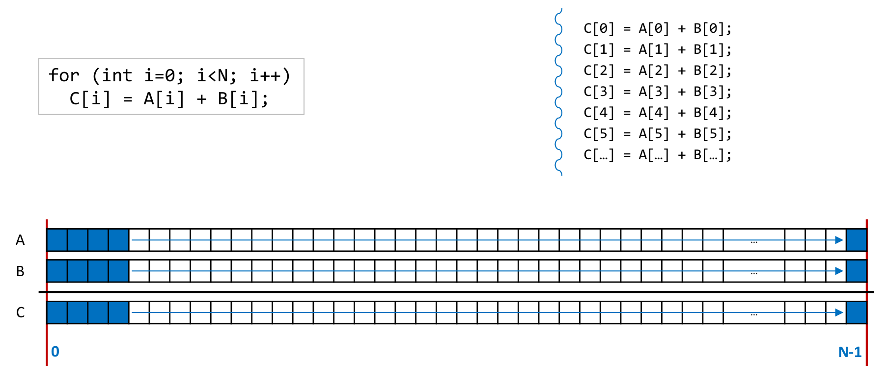
for (int i=0; i<N; i++) C[i] = A[i] + B[i];이고, 오른쪽의 파란 물결선은 하나의 실행 흐름을 나타내며, 그 옆에 이 흐름이 차례로 실행하는 문장 C[0] = A[0] + B[0];, C[1] = A[1] + B[1];, …, C[5] = A[5] + B[5];, C[…] = A[…] + B[…];가 위에서 아래로 나열되어 있습니다. 아래쪽 세 줄은 배열 A, B, C를 칸으로 그린 것으로, 빨간 세로선이 인덱스 0과 N-1의 양 끝을 표시하고, B와 C 사이의 굵은 가로선은 세로셈처럼 위의 두 배열을 더한 결과가 아래의 C라는 뜻입니다. 세 배열의 앞쪽 네 칸과 마지막 칸이 파랗게 칠해져 있고 그 사이를 파란 화살표가 잇는 것은, 흐름 하나가 0번 원소부터 N-1번 원소까지를 혼자 차례로 훑어 간다는 뜻입니다. 각 원소의 덧셈이 같은 위치의 원소만 쓰므로 원소끼리 서로 기대지 않는다는 것, 그리고 지금은 그 N번의 덧셈을 흐름 하나가 모두 맡고 있다는 것이 다음 두 그림과 비교할 출발점입니다.이 반복문이 데이터 병렬성의 좋은 예인 이유는 반복 하나하나가 서로 완전히 독립적이기 때문입니다.
- 반복 \(i\)는
A[i]와B[i]만 읽고C[i]만 씁니다. 다른 반복이 쓰는 원소를 읽지도 않고, 다른 반복이 쓰는 원소에 쓰지도 않습니다. - 따라서 반복들을 어떤 순서로 실행하든, 여러 흐름이 동시에 나누어 실행하든 최종
C는 같습니다. 1.7절에서 이 조건을 식으로 정리합니다. - 슬라이드의 실행 스레드(execution thread)는 일반적인 의미의 “실행 흐름”입니다. 흐름을 실제로 무엇으로 만드는지(프로세스인지 스레드인지)는 3장의 주제이고, 스레드라는 구체적인 도구는 20강에서 다룹니다.
1.3 벡터 덧셈의 데이터 병렬화 (Data Parallelism: Vector Addition: C = A + B)
반복 구간 0 … N-1을 연속된 네 구간으로 잘라, 구간마다 흐름 하나에 맡깁니다.
// 원래의 반복문 하나를 반복 구간만 다른 네 반복문으로 나눈다 (흐름 하나에 하나씩)
for (int i=0; i<N/4; i++) // 파랑: C[0] … C[N/4-1]
C[i] = A[i] + B[i];
for (int i=N/4; i<N/2; i++) // 빨강: C[N/4] … C[N/2-1]
C[i] = A[i] + B[i];
for (int i=N/2; i<N/4*3; i++) // 초록: C[N/2] … C[N/4*3-1]
C[i] = A[i] + B[i];
for (int i=N/4*3; i<N; i++) // 보라: C[N/4*3] … C[N-1]
C[i] = A[i] + B[i];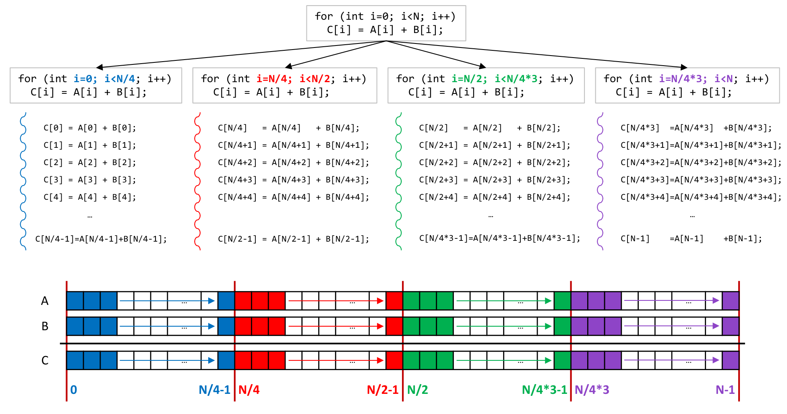
i=0; i<N/4, 빨강은 i=N/4; i<N/2, 초록은 i=N/2; i<N/4*3, 보라는 i=N/4*3; i<N입니다. 각 상자 아래의 같은 색 물결선이 그 반복문을 실행하는 흐름이고, 옆의 문장 목록은 그 흐름이 실행하는 덧셈으로, 파랑은 C[0]부터 C[N/4-1]까지, 빨강은 C[N/4]부터 C[N/2-1]까지, 초록은 C[N/2]부터 C[N/4*3-1]까지, 보라는 C[N/4*3]부터 C[N-1]까지를 계산합니다. 아래쪽 배열 A, B, C는 빨간 세로선에 의해 네 구간으로 나뉘어 각 구간을 맡은 흐름의 색으로 칠해져 있고, 구간마다 같은 색 화살표가 그 흐름이 자기 구간 안에서 왼쪽에서 오른쪽으로 훑어 간다는 것을 보여 줍니다. 아래의 경계 이름표 0과 N/4-1, N/4와 N/2-1, N/2와 N/43-1, N/43과 N-1이 보여 주듯 네 구간은 겹치지 않으면서 빈틈없이 전체를 덮으므로, 네 흐름을 어떤 순서로 실행하든 동시에 실행하든 결과 C는 순차 반복문과 같습니다.\(N\)이 4의 배수라고 하고 흐름에 \(k = 0, 1, 2, 3\)(파랑 · 빨강 · 초록 · 보라)의 번호를 붙이면, 흐름 \(k\)가 맡는 인덱스는 다음 구간입니다.
\[ \frac{kN}{4} \;\le\; i \;<\; \frac{(k+1)N}{4}, \qquad k = 0, 1, 2, 3 \]
- 네 구간은 서로 겹치지 않고, 합치면 \(0 \le i < N\) 전체가 됩니다. 그래서 각 원소는 정확히 한 흐름이 한 번만 계산합니다.
- 각 흐름은 원래 반복문의 4분의 1만큼을 처리하므로, 네 흐름이 서로 다른 코어에서 병렬로 실행되면 이상적으로는 걸리는 시간이 4분의 1 가까이로 줄어듭니다.
- 슬라이드의 경계
N/4*3은 C에서 왼쪽부터 계산되므로 \(\lfloor N/4 \rfloor \cdot 3\)입니다. 슬라이드의 인덱스 표기(C[N/4-1]이 파랑의 마지막 원소라는 식의)는 \(N\)이 4의 배수라고 가정한 것으로 읽으면 됩니다. 4의 배수가 아니면 정수 나눗셈 때문에 덩어리 크기가 고르지 않을 수 있습니다. 예를 들어 \(N = 10\)이면N/4= 2,N/2= 5,N/4*3= 6이어서 네 구간이 \([0, 2), [2, 5), [5, 6), [6, 10)\), 즉 2 · 3 · 1 · 4개가 됩니다. 경계를k*N/4처럼 먼저 곱하고 나중에 나누어 \(\lfloor kN/4 \rfloor\)로 잡으면 경계가 0, 2, 5, 7, 10이 되어 2 · 3 · 2 · 3개로, 덩어리 크기의 차이가 1을 넘지 않습니다.
1.4 여러 가지 작업량 분배 (Different Workload Distributions Possible)
같은 반복을 나누는 방법이 연속 구간만 있는 것은 아닙니다. 8번 슬라이드는 원소를 한 칸씩 번갈아 네 흐름에 나누어 줍니다.
// 시작값만 다르고 모두 4칸씩 건너뛰는 네 반복문
for (int i=0; i<N; i+=4) // 파랑: C[0], C[4], C[8], … C[N-4]
C[i] = A[i] + B[i];
for (int i=1; i<N; i+=4) // 빨강: C[1], C[5], C[9], … C[N-3]
C[i] = A[i] + B[i];
for (int i=2; i<N; i+=4) // 초록: C[2], C[6], C[10], … C[N-2]
C[i] = A[i] + B[i];
for (int i=3; i<N; i+=4) // 보라: C[3], C[7], C[11], … C[N-1]
C[i] = A[i] + B[i];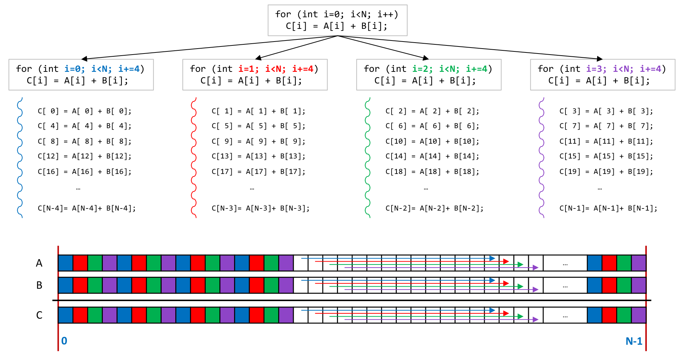
i+=4입니다. 그래서 물결선 옆의 목록처럼 파랑은 C[ 0], C[ 4], C[ 8], …, C[N-4]를, 빨강은 C[ 1], C[ 5], …, C[N-3]을, 초록은 C[ 2], C[ 6], …, C[N-2]를, 보라는 C[ 3], C[ 7], …, C[N-1]을 계산합니다. 아래쪽 배열의 칸도 파랑 · 빨강 · 초록 · 보라가 한 칸씩 되풀이되도록 칠해져 있고, 길이가 같은 네 색 화살표가 한 칸씩 어긋나 겹쳐 그려진 것은 네 흐름이 모두 배열 전체에 걸쳐 네 칸씩 건너뛰며 훑어 간다는 뜻입니다. 계산 결과는 앞 그림과 같지만, 각 흐름이 맡은 원소가 한 구간에 모여 있지 않고 배열 전체에 흩어져 있다는 점이 다릅니다.흐름 \(k\)가 맡는 인덱스는 이번에는 4로 나눈 나머지가 \(k\)인 원소들입니다.
\[ i \equiv k \pmod{4}, \qquad 0 \le i < N, \qquad k = 0, 1, 2, 3 \]
이 방식도 네 집합이 서로 겹치지 않고 전체를 덮으므로 결과는 같습니다. 무엇이 달라지는지 두 방식을 나란히 놓고 보겠습니다. 표의 아래 두 행은 슬라이드에 없는 일반적인 배경 설명입니다.
| 연속 분할 (1.3절) | 교차 분할 (1.4절) | |
|---|---|---|
| 흐름 \(k\)의 몫 | \(\lfloor kN/4 \rfloor \le i < \lfloor (k+1)N/4 \rfloor\) | \(i \equiv k \pmod 4\) |
| \(N\)이 4의 배수가 아닐 때 | 경계를 \(\lfloor kN/4 \rfloor\)로 잡으면 흐름 사이의 차이가 많아야 1개입니다(\(N = 10\)이면 2 · 3 · 2 · 3개). 슬라이드의 N/4*3처럼 잡으면 2 · 3 · 1 · 4개로 어긋납니다 |
경계를 따로 계산하지 않아도 차이가 많아야 1개입니다(\(N = 10\)이면 3 · 3 · 2 · 2개) |
| 원소마다 계산량이 다를 때 | 무거운 원소가 한 구간에 몰려 있으면 그 흐름만 늦게 끝나고 나머지는 놀게 됩니다 | 무거운 원소가 네 흐름에 고루 흩어지기 쉽습니다 |
| 캐시와의 관계 | 흐름마다 메모리의 서로 다른 영역을 연속으로 훑으므로, 구간 경계를 빼면 서로 다른 캐시 블록에 씁니다 | 이웃한 원소를 서로 다른 흐름이 쓰므로, 같은 캐시 블록을 여러 코어가 번갈아 고쳐 쓰게 되어 성능이 떨어질 수 있습니다(거짓 공유, false sharing) |
벡터 덧셈처럼 원소마다 계산량이 똑같은 경우에는 두 방식의 부하 균형이 거의 같지만, 계산량이 원소마다 다른 문제에서는 이 선택이 성능을 크게 좌우합니다. 슬라이드가 이 그림을 “작업량 분배는 여러 가지가 가능하다”라고만 소개하고 세 쪽 뒤(11번 슬라이드, 1.7절)에서 “무엇이 좋은가”를 열린 문제로 남기는 것도 그 때문입니다.
1.5 작업 병렬성 (Task Parallelism)
- 서로 다른 작업(task)을 여러 실행 스레드에 나누어 줍니다.
- 작업들은 병렬로 처리될 수 있습니다.
- 예: 웹 서버
데이터 병렬성이 같은 계산을 데이터 조각마다 되풀이하는 것이었다면, 작업 병렬성은 서로 다른 일거리를 흐름들에 나누어 줍니다. 웹 서버라면 일거리 하나가 요청 하나이고, 요청마다 처리에 걸리는 시간도 도착하는 시각도 제각각입니다.
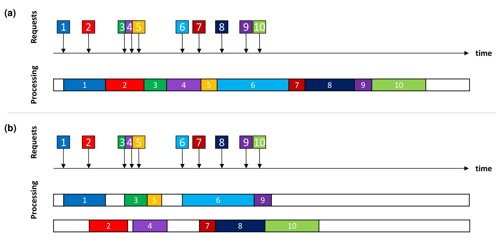
먼저 (a), 처리 흐름이 하나뿐인 경우를 보겠습니다. 18강 3.1절의 웹 서버 Tiny도 연결을 한 번에 하나씩 처리하는 순차 서버였으므로, 이 그림이 바로 그런 서버의 모습입니다.
- 첫 요청이 처리되기 시작한 뒤로 처리 줄에 빈칸이 전혀 없습니다. 요청 2부터는 모두 앞 요청이 아직 처리 중일 때 도착해 대기열에 쌓이고, 앞 요청이 끝나야 차례가 옵니다.
- 대기 시간은 갈수록 길어집니다. 처리 시간이 가장 긴 요청 6 뒤에는 짧은 요청 7이 줄을 서 있고, 6이 처리되는 동안 8 · 9 · 10이 차례로 도착해 그 뒤에 쌓입니다. 마지막 요청 10은 그림에서 재면 자기 처리 시간의 두 배가 넘게 기다린 뒤에야 처리되기 시작합니다.
- 긴 작업 하나가 뒤의 짧은 작업들을 붙잡아 두는 이 모양은 18강 4.6절에서 본 HTTP/1.1의 HOL 블로킹과 같은 구조입니다.
1.6 웹 서버의 작업 병렬성 (Task Parallelism: Webserver)
10번 슬라이드는 같은 요청들을 처리 흐름 두 개로 처리합니다. 앞 그림의 (b)입니다.
- 요청은 그때 비어 있는 줄로 갑니다. 그 결과 위 줄은 1 · 3 · 5 · 6 · 9를, 아래 줄은 2 · 4 · 7 · 8 · 10을 처리합니다. 홀짝으로 정해 둔 것이 아니라 도착했을 때 비어 있는 쪽에 들어간 결과입니다.
- 대부분의 요청이 도착하자마자 처리되기 시작합니다. 두 줄이 모두 바쁠 때 도착한 5 · 9 · 10만 잠깐 기다립니다.
- 요청들이 도착 순서와 다르게 끝날 수 있습니다. 7은 6보다 늦게 도착했지만 다른 줄에서 처리되어 6보다 먼저 끝나고, 5도 4보다 먼저 끝납니다. 요청끼리 서로 독립적이기 때문에 가능한 일입니다.
- 두 줄 모두에 빈칸이 생겼다는 것은 처리 능력에 여유가 생겼다는 뜻이고, 마지막 요청이 끝나는 시각도 (a)보다 크게 앞당겨집니다.
처리해야 할 일의 총량(막대 길이의 합)은 (a)와 (b)가 사실상 같습니다. 달라진 것은 기다리는 시간입니다. 일을 여러 흐름에 나누어도 한 요청의 처리 시간 자체는 줄지 않지만, 요청이 다른 요청 뒤에서 줄 서는 시간이 크게 줄어들므로 서버의 응답이 빨라집니다. 2장부터의 동시성 서버가 노리는 것이 바로 이 효과입니다.
1.7 두 모델에 공통된 흥미로운 문제들 (In Both Models, Lots of Interesting Problems)
- 데이터 병렬성
- 작업량 분배(workload distribution): 정적(static)? 동적(dynamic)? 한 번에 얼마만큼?
- 작업량 분할(workload breakdown): 연속(consecutive)? 교차(interleaved)? …?
- 작업 병렬성
- 병렬 작업을 몇 개로 할까?
- 데이터 의존성(data dependencies)
- 전역 상태 대 지역 상태(global state vs. local state)
- …
슬라이드는 질문만 던지고 답은 남겨 둡니다. 각 질문이 무엇을 묻는지 풀어 보겠습니다.
작업량 분배: 정적 대 동적, 그리고 덩어리 크기. 1.3–1.4절의 두 방식은 모두 정적 분배, 즉 실행하기 전에 누가 무엇을 맡을지 미리 정해 두는 방식입니다. 동적 분배에서는 일을 작은 덩어리로 쪼개 놓고, 자기 몫을 끝낸 흐름이 남은 덩어리를 하나씩 가져갑니다. 그러면 계산량이 원소마다 달라도 일찍 끝난 흐름이 놀지 않습니다. “한 번에 얼마만큼?”은 그 덩어리의 크기를 묻는 것으로, 덩어리가 작을수록 부하는 고르게 퍼지지만 덩어리를 나누어 주는 관리 비용이 늘어나는 맞교환이 있습니다.
슬라이드가 예로 든 OpenMP에서는 반복문 앞의 schedule 절로 분배 방식을 고릅니다. schedule(static)은 반복 구간을 거의 같은 크기의 연속 덩어리로 나누어 스레드마다 많아야 하나씩 주므로 1.3절의 연속 분할에 해당하고, schedule(static, 1)은 크기 1의 덩어리를 스레드 번호 순서대로 돌아가며 나누어 주므로 스레드가 넷이면 1.4절의 교차 분할과 같습니다. schedule(dynamic, k)는 일을 마친 스레드가 다음 \(k\)개의 반복을 요청해 가져가는 동적 분배이며, 여기서 \(k\)가 슬라이드의 “한 번에 얼마만큼”입니다.
작업량 분할: 연속 대 교차. 1.4절의 표에서 정리한 대로 부하 균형과 메모리 접근의 국소성(캐시) 사이의 선택입니다.
병렬 작업은 몇 개로? 1.6절에서 처리 줄을 하나에서 둘로 늘리자 대기 시간이 크게 줄었습니다. 그렇다고 흐름을 한없이 늘리는 것이 답은 아닙니다. 흐름마다 만들고 관리하는 비용이 들고(4.6절), 코어 수보다 흐름이 많아지면 흐름들은 코어를 번갈아 쓸 뿐 그 이상 병렬로 실행되지는 못합니다.
데이터 의존성. 1.2절에서 벡터 덧셈의 반복들이 서로 독립적이라고 했습니다. 이를 식으로 적어 보겠습니다. 반복 \(i\)가 읽는 원소들의 집합을 \(R_i\), 쓰는 원소들의 집합을 \(W_i\)라고 하면, 두 반복 \(i \ne j\)의 실행 순서를 바꾸거나 둘을 동시에 실행해도 결과가 같을 충분조건은 다음 세 교집합이 모두 비어 있는 것입니다(번스타인 조건, Bernstein’s conditions).
\[ W_i \cap R_j = \varnothing, \qquad R_i \cap W_j = \varnothing, \qquad W_i \cap W_j = \varnothing \]
- 첫째 조건이 깨지면 \(j\)가 \(i\)보다 먼저 실행되느냐 나중에 실행되느냐에 따라 \(j\)가 읽는 값이 달라지고, 둘째는 그 반대이며, 셋째가 깨지면 어느 쪽이 나중에 쓰느냐에 따라 최종 값이 달라집니다.
- 벡터 덧셈에서는 \(R_i = \{A[i], B[i]\}\), \(W_i = \{C[i]\}\)이므로 \(i \ne j\)이면 세 교집합이 모두 비어 있습니다. 그래서 1.3–1.4절처럼 아무렇게나 나누어도 됩니다.
- 반대로 누적 합
A[i] = A[i-1] + B[i]에서는 \(R_i = \{A[i-1], B[i]\}\), \(W_{i-1} = \{A[i-1]\}\)이므로 \(W_{i-1} \cap R_i = \{A[i-1]\} \ne \varnothing\)입니다. 반복 \(i\)는 반복 \(i-1\)의 결과가 있어야 계산할 수 있으므로, 1.3절처럼 구간을 잘라 동시에 실행하면 틀린 답이 나옵니다. 이런 반복 사이의 의존성이 데이터 병렬화를 가로막는 대표적인 장애물입니다.
전역 상태 대 지역 상태. 각 흐름의 반복 변수 i처럼 흐름마다 따로 있는 지역 상태는 다른 흐름과 부딪칠 일이 없습니다. 반면 여러 흐름이 함께 읽고 쓰는 전역 상태(예: 처리한 요청의 수를 세는 전역 변수)는 위의 조건을 깨뜨리기 쉽고, 그 결과가 1.9절의 경쟁입니다. 어떤 상태를 공유하고 어떤 상태를 흐름마다 둘지가 설계의 핵심이며, 4.6절의 “공유 모델”과 20 · 21강의 스레드와 동기화가 모두 이 질문으로 이어집니다.
1.8 동시성 프로그래밍은 어렵다 (Concurrent Programming is Hard!)
- 사람의 생각은 순차적인 경향이 있습니다.
- 컴퓨터 시스템에서 일어날 수 있는 사건들의 모든 순서를 따져 보는 것은, 적어도 오류를 부르기 쉽고 많은 경우 아예 불가능합니다.
“불가능하다”가 과장이 아니라는 것은 간단한 계산으로 확인할 수 있습니다. 두 흐름이 각각 \(m\)개와 \(n\)개의 단계로 이루어져 있고, 흐름 안의 단계 순서는 지켜지되 두 흐름의 단계는 아무렇게나 섞일 수 있다고 합시다. 섞인 나열 하나는 전체 \(m+n\)개의 자리 중 첫째 흐름의 단계가 들어갈 \(m\)개의 자리를 고르면 정해지므로(나머지 자리는 둘째 흐름이 순서대로 채웁니다), 가능한 실행 순서의 수는 다음과 같습니다.
\[ \binom{m+n}{m} = \frac{(m+n)!}{m!\,n!}, \qquad \binom{20}{10} = 184{,}756 \]
단계가 열 개씩뿐인 두 흐름도 18만 가지가 넘는 순서로 실행될 수 있고, 흐름이 셋 넷으로 늘거나 단계가 길어지면 이 수는 순식간에 손으로 다룰 수 없는 크기가 됩니다. 그래서 동시성 프로그램은 “모든 순서를 따져 보아” 맞음을 확인하는 대신, 잘못된 순서가 아예 생기지 않도록 구조를 짜는 방식으로 다루어야 합니다(21강의 동기화).
슬라이드는 이어서 동시성 프로그램의 고전적인 문제 유형을 셋으로 정리합니다.
| 문제 | 슬라이드의 정의 | 슬라이드의 예 |
|---|---|---|
| 경쟁 (Races) | 결과가 시스템의 다른 곳에서 내려지는 임의의 스케줄링 결정에 좌우됩니다 | 비행기의 마지막 좌석은 누가 차지할까? |
| 교착 상태 (Deadlock) | 부적절한 자원 할당이 진행(forward progress)을 가로막습니다 | 교통 정체(traffic gridlock) |
| 라이브락 / 기아 상태 / 공정성 (Livelock / Starvation / Fairness) | 외부 사건이나 시스템의 스케줄링 결정이 일부 작업의 진행을 막을 수 있습니다 | 줄을 서면 사람들이 늘 내 앞으로 끼어든다 |
- 동시성 프로그래밍의 많은 측면은 이 강의의 범위를 벗어납니다.
셋째 칸의 세 용어는 슬라이드가 한데 묶었지만 뜻이 조금씩 다릅니다.
- 기아 상태(starvation): 시스템 전체는 계속 진행되는데, 특정 흐름만 필요한 자원이나 차례를 끝없이 얻지 못하는 상태입니다. 줄에서 늘 누군가 내 앞으로 끼어들면 줄은 계속 앞으로 나아가는데 나만 영원히 서 있게 됩니다(1.11절).
- 라이브락(livelock): 흐름들이 멈춰 있지는 않고 계속 무언가를 하지만, 서로의 행동에 반응해 상태를 바꾸기만 할 뿐 아무도 진행하지 못하는 상태입니다. 좁은 복도에서 마주친 두 사람이 서로 비켜 주려고 같은 쪽으로 동시에 몇 번이고 피하는 모습이 흔히 드는 예입니다. 모두가 막혀 있는 교착 상태와 결과는 같지만, 흐름들이 바쁘게 움직이고 있다는 점이 다릅니다.
- 공정성(fairness): 기다리는 흐름이 언젠가는 반드시 차례를 얻는다는 성질입니다. 기아 상태는 공정성이 깨진 결과입니다.
1.9 경쟁 (Races)
1.8절의 정의대로 경쟁(race)은 결과가 스케줄링 결정에 좌우되는 상황입니다. 슬라이드의 예 “비행기의 마지막 좌석은 누가 차지할까?”를 풀어 보면, 두 여행사 직원이 동시에 같은 항공편을 조회해 둘 다 “1석 남음”을 보고 각자 손님에게 그 좌석을 판다고 할 때, 누가 좌석을 얻는지는 두 직원의 요청이 어떤 순서로 처리되느냐에 달려 있습니다. 조회와 판매 사이에 상대의 판매가 끼어들 수 있다면 한 좌석이 두 번 팔리는 일도 생깁니다. 15강 5.5–5.6절에서 메인 프로그램과 시그널 핸들러가 같은 잔액 변수를 고칠 때 본 경쟁 조건(race condition)이 바로 이런 구조였습니다.
15번 슬라이드는 지금까지 배운 도구만으로 경쟁을 만들어 보입니다. 슬라이드의 코드에 컴파일에 필요한 헤더를 더하고, 셋째 printf의 여는 따옴표가 굽은 따옴표(“)로 잘못 들어가 있는 것을 곧은 따옴표로 고쳤습니다.
#include <stdio.h> // printf (슬라이드에 없는 헤더)
#include <stdlib.h> // EXIT_SUCCESS
#include <sys/types.h> // pid_t
#include <unistd.h> // fork
int main(int argc, char *argv[])
{
pid_t pid = fork(); // 여기서 흐름이 둘로 갈라진다
if (pid > 0) printf("Hello from parent!\n"); // 부모 (pid = 자식의 PID)
else if (pid == 0) printf("Hello from child!\n"); // 자식
else printf("Cannot fork.\n"); // fork 실패
return EXIT_SUCCESS;
}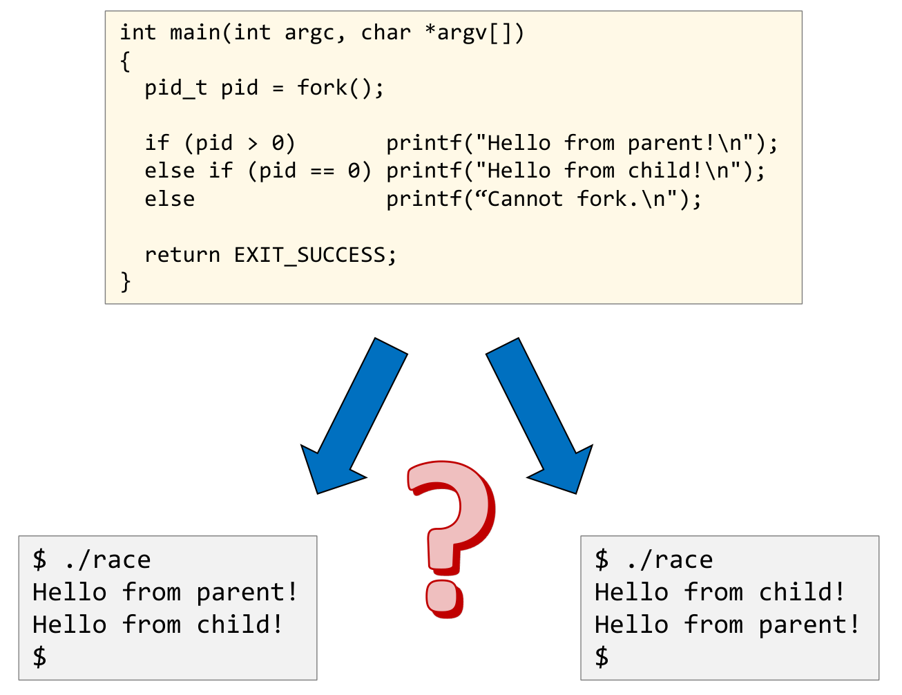
main은 fork()를 부른 뒤 반환값 pid가 양수이면(부모) Hello from parent!를, 0이면(자식) Hello from child!를, 음수이면 Cannot fork.를 출력합니다. 아래로 갈라지는 파란 화살표 두 개는 같은 프로그램을 실행해도 결과가 두 갈래로 나뉜다는 뜻이고, 왼쪽 회색 상자는 부모의 줄이 먼저, 오른쪽 상자는 자식의 줄이 먼저 찍힌 터미널 출력입니다. 가운데의 붉은 물음표는 이번 실행에서 어느 쪽이 나올지를 프로그램만 보고는 알 수 없다는 것을 나타냅니다. 위 상자의 셋째 printf는 여는 따옴표가 굽은 따옴표로 잘못 들어가 있어 슬라이드 그대로는 컴파일되지 않습니다.fork가 돌아온 순간부터 부모와 자식은 두 개의 독립적인 흐름이고, 둘 다 실행 가능한 상태입니다. 어느 쪽이 먼저 CPU를 얻을지는 커널의 스케줄러가 정하고, 코어가 여럿이면 둘이 실제로 병렬로 실행되어 어느 쪽의printf가 먼저 터미널에 닿을지도 미리 알 수 없습니다.- 13강 4.7절의 말로 하면, 이 프로그램의 프로세스 그래프에는
fork뒤에 서로 이어지지 않은printf꼭짓점이 두 개 있으므로 위상 정렬, 즉 가능한 출력 순서가 두 가지입니다. 슬라이드의 두 출력이 바로 그 둘입니다. - 부모는 자식을 기다리지 않고 끝납니다. 셸은 자기가 실행한 부모가 끝나기만 기다리므로, 부모가 먼저 끝나면 셸이 다음 프롬프트를 먼저 찍고 자식의 줄이 그 뒤에 나타나는 경우도 있을 수 있습니다(13강 5.3절의 “부모가 먼저 끝나면”).
이 글을 쓰며 macOS에서 이 프로그램을 의사 터미널(pty)에 연결해 1,000번 실행해 보니, 부모의 줄이 먼저 나온 경우가 992번, 자식의 줄이 먼저 나온 경우가 8번이었습니다(출력을 파이프로 보내도 995번 대 5번이었습니다). 거의 언제나 한쪽 순서만 나오므로, 몇 번 실행해 보고 “부모가 먼저 출력한다”고 결론 내리기 쉽습니다. 하지만 드물게 나오는 다른 순서도 똑같이 올바른 실행이며, 부하나 코어 수, 운영체제가 달라지면 비율은 얼마든지 바뀝니다. 특정 순서를 전제로 짠 코드는 시험할 때는 멀쩡하다가 운영 중에 가끔 틀리는 버그가 되므로, 순서가 중요하면 waitpid 같은 동기화로 순서를 강제해야 합니다.
1.10 교착 상태 (Deadlock)
17번 슬라이드는 교착 상태를 프로그램으로 보여 줍니다. 두 프로그램 p1.c와 p2.c가 모두 프린터(printer)와 네트워크(network)라는 두 자원을 함께 써야 하고, 각 자원은 lock으로 독점한 뒤 unlock으로 놓는다고 합시다. 슬라이드의 코드는 동작을 나타낸 의사 코드입니다.
p1.c p2.c
… …
lock(printer); lock(network);
… …
lock(network); lock(printer);
… …
use printer & network use printer & network
… …
unlock(network); unlock(network);
unlock(printer); unlock(printer);
… …두 프로그램의 차이는 잠그는 순서뿐입니다. p1.c는 프린터를 먼저, p2.c는 네트워크를 먼저 잠급니다.
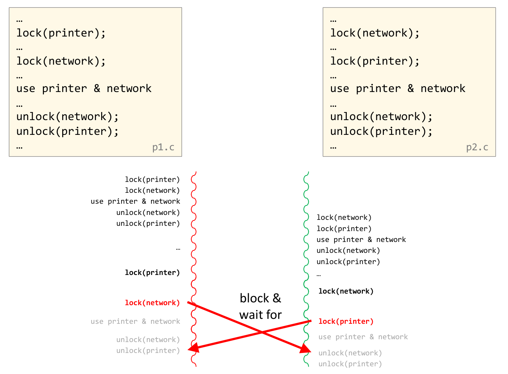
p1.c와 p2.c의 뼈대로, p1.c는 lock(printer) → lock(network) 순서로, p2.c는 lock(network) → lock(printer) 순서로 두 자원을 잠근 뒤 함께 쓰고, 둘 다 unlock(network) → unlock(printer) 순서로 풉니다. 아래의 빨간 물결선이 p1의 실행 흐름, 초록 물결선이 p2의 실행 흐름이고 위에서 아래로 시간이 흐릅니다. 첫 차례에서는 p1이 두 잠금을 풀어 갈 무렵에야 p2가 잠그기 시작하므로, p2가 각 자원을 잡으려 할 때 p1이 이미 그 자원을 놓은 뒤여서 아무 문제가 없습니다. 다음 차례에서는 p1이 lock(printer)를, p2가 lock(network)를 각각 먼저 잡고(검은 굵은 글씨), 이어서 p1은 lock(network)에서, p2는 lock(printer)에서 막힙니다(빨간 굵은 글씨). 가운데에서 X자로 엇갈린 빨간 화살표와 block & wait for(막혀서 기다림)는, p1의 lock(network)가 p2의 unlock(network)를, p2의 lock(printer)가 p1의 unlock(printer)를 기다린다는 뜻입니다. 그 아래 회색 글씨의 use printer & network와 unlock 문장들은 끝내 실행되지 않는 부분으로, 서로가 서로의 해제를 기다리는 원이 생기면 두 흐름 모두 영원히 멈춘다는 것을 보여 줍니다.그림의 두 차례를 비교하면 교착 상태가 왜 “가끔” 일어나는지 알 수 있습니다.
| 차례 | 실행 순서 | 결과 |
|---|---|---|
| 첫 차례 | p1이 두 자원을 잠그고 쓰고 풀어 가는 막바지에 p2가 잠그기 시작합니다. p2가 네트워크를 잠글 때는 p1이 이미 네트워크를 놓았고, 프린터를 잠글 때도 p1이 이미 프린터를 놓았습니다 | 둘 다 정상적으로 끝납니다 |
| 다음 차례 | p1이 프린터를, p2가 네트워크를 거의 동시에 잡습니다. 이제 p1은 네트워크를, p2는 프린터를 기다립니다 | 두 흐름이 영원히 멈춥니다 |
- 다음 차례에서 p1이 기다리는
unlock(network)는 p2가lock(printer)를 통과해야 실행되는데, p2의lock(printer)는 p1의unlock(printer)를 기다리고, 그것은 다시 p1이lock(network)를 통과해야 실행됩니다. 기다림의 관계가 원(cycle)을 이루므로 어느 쪽도 먼저 풀려날 수 없습니다. - 두 차례의 차이는 오로지 스케줄링, 즉 두
lock이 실행된 시점의 차이입니다. 같은 코드가 대부분은 잘 돌다가 어쩌다 한 번 멈추는 것은 이 때문이고, 그래서 교착 상태도 1.9절의 경쟁처럼 테스트로 찾기 어렵습니다.
운영체제 교과서들은 교착 상태가 생기려면 네 조건, 즉 상호 배제(자원을 한 번에 하나만 쓸 수 있음), 점유하며 대기(자원을 쥔 채 다른 자원을 기다림), 비선점(남이 쥔 자원을 빼앗을 수 없음), 순환 대기(기다림이 원을 이룸)가 모두 성립해야 한다고 정리합니다. 이 예에서 가장 손쉽게 깰 수 있는 것은 순환 대기입니다. p2.c도 p1.c처럼 프린터를 먼저, 네트워크를 나중에 잠그도록 고치면, 네트워크를 쥔 흐름은 언제나 이미 프린터도 쥐고 있으므로 “네트워크를 쥐고 프린터를 기다리는” 흐름이 생길 수 없고, 따라서 원도 생기지 않습니다. 21강도 교착 상태를 피하는 방법으로 바로 이 규칙, 즉 공유 자원을 모든 흐름이 같은 순서로 잡게 하는 방법을 듭니다.
1.11 기아 상태 (Starvation)
슬라이드는 설명 없이 사진만 싣고 있지만, 13번 슬라이드의 예 “줄을 서면 사람들이 늘 내 앞으로 끼어든다”와 같은 뜻으로 읽을 수 있습니다.
- 교착 상태와의 차이: 교착 상태(1.10절)에서는 관련된 흐름이 모두 멈춥니다. 기아 상태에서는 다른 흐름들은 잘 진행하는데 어떤 흐름만 계속 밀려납니다. 회전 교차로 안의 차들은 잘 돌고 있으므로 교차로가 “막힌” 것은 아닙니다.
- 원인은 우선순위나 스케줄링 규칙입니다: 도는 차가 먼저라는 규칙 자체는 합리적이지만, 그 규칙만으로는 기다리는 차가 언젠가 들어간다는 보장, 즉 1.8절의 공정성이 생기지 않습니다. 컴퓨터에서도 우선순위가 높은 흐름이 끊임없이 들어오면 낮은 흐름이 CPU나 잠금을 영영 얻지 못할 수 있습니다.
2. 실행 예제: 동시성 웹 서버 (Running Example – A Concurrent Webserver)
1장의 개념들을 실제 서버 코드에 적용해 볼 차례입니다. 개요 슬라이드는 이 장을 “동시성 웹 서버”라고 부르지만, 실행 예제로 쓰는 것은 17강에서 본 것과 같은 echo 서버입니다. 요청을 받아 응답을 돌려준다는 구조는 웹 서버와 같으면서, 프로토콜이 단순해 동시성의 문제만 깔끔하게 드러나기 때문입니다. 이 장의 구분 슬라이드에는 2.2절의 시간 흐름 그림이 실려 있습니다.
2.1 반복 echo 서버 (Iterative Echo Server)
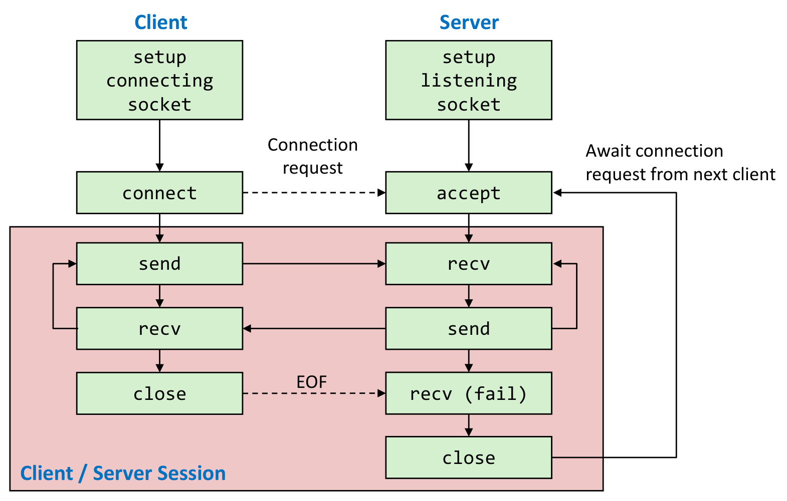
connect로 연결을 요청하고, 오른쪽 열 Server는 듣기 소켓을 준비한 뒤(setup listening socket) accept에서 그 요청을 받으며, 두 상자를 잇는 점선 화살표 Connection request가 연결 요청입니다. 분홍 상자 Client / Server Session은 연결 하나가 살아 있는 동안의 대화로, 클라이언트의 send가 서버의 recv로, 서버의 send가 클라이언트의 recv로 이어지며(실선 화살표), 양쪽 상자 옆의 되돌아가는 화살표는 이 주고받기가 여러 번 되풀이된다는 뜻입니다. 클라이언트가 close하면 점선 화살표 EOF처럼 서버의 recv가 실패하고(recv (fail)) 서버도 close합니다. 서버의 close에서 accept로 되돌아가는 바깥쪽 화살표 Await connection request from next client(다음 클라이언트의 연결 요청을 기다림)는 서버가 한 세션을 완전히 끝낸 뒤에야 다음 클라이언트를 받는다는 것, 즉 이 서버가 반복 서버라는 것을 보여 줍니다.17강 2.2절의 흐름도를 간추린 그림입니다. 이번에는 서버가 한 세션을 끝내고 다음 클라이언트로 넘어가는 바깥 고리에 주목해서 다시 봅니다.
- 세션 안: 클라이언트가
send로 보낸 데이터를 서버가recv로 받아 그대로send로 돌려보내고, 클라이언트가recv로 받습니다. 이 주고받기가 클라이언트가 끝낼 때까지 되풀이됩니다. - 세션의 끝: 클라이언트가
close하면 서버 쪽recv는 EOF를 만나 0을 돌려줍니다. 슬라이드의 recv (fail)은 오류(−1)가 아니라 “더 받을 데이터가 없다”는 뜻의 이 반환입니다. 서버는 그 연결을close합니다. - 바깥 고리: 서버는 그제야
accept로 돌아가 다음 클라이언트의 연결 요청을 기다립니다. 이렇게 한 번에 한 세션씩 처리하는 서버를 반복 서버(iterative server)라고 합니다. 17강 1.6절에서 본 서버 이름echoserveri의 i가 바로 이 iterative의 i로, 교재 CS:APP의 반복 서버 예제와 같은 이름입니다.
2.2 반복 서버 (Iterative Servers)
- 반복 서버는 한 번에 요청 하나만 처리합니다.
클라이언트가 둘일 때 이것이 무엇을 뜻하는지 시간 축으로 그려 보면 다음과 같습니다.
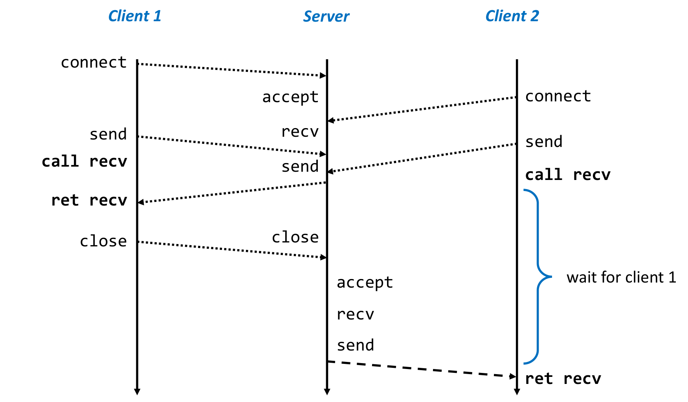
connect하면 서버가 accept하고, Client 1의 send를 서버가 recv한 뒤 send로 되돌려 주면 Client 1의 recv가 돌아옵니다(굵은 글씨 call recv → ret recv). 그사이 Client 2도 connect하고 send한 뒤 call recv로 응답을 기다리기 시작하지만, 서버는 Client 1이 close하고 자신도 close한 다음에야 두 번째 accept, recv, send로 Client 2를 처리합니다. 오른쪽의 파란 중괄호 wait for client 1은 그동안 Client 2가 Client 1 때문에 기다린 시간이며, 맨 아래의 긴 파선 화살표가 도착해서야 Client 2의 ret recv가 이루어집니다. 서버의 흐름이 하나뿐이어서 클라이언트가 둘이어도 한 번에 하나씩만 처리된다는 것이 이 그림의 요점입니다.- 굵은 글씨 call recv와 ret recv는 블록되는 호출이 시작되고 돌아오는 시점입니다. 둘 사이의 간격이 그 흐름이 기다린 시간이므로, Client 1은 잠깐, Client 2는 중괄호만큼 오래 기다립니다.
- 눈여겨볼 점은 서버가 Client 1을 상대하는 동안에도 Client 2의
connect와send는 막히지 않는다는 것입니다. 연결 설정은 서버 프로세스가 아니라 커널이 처리해 연결을 듣기 소켓의 대기열에 넣어 두므로(17강 2.5절의backlog), 서버가 아직accept하지 않았어도 클라이언트의connect는 돌아옵니다. Client 2가 보낸 데이터도 커널이 그 연결의 수신 버퍼에 담아 둡니다. Client 2가 막히는 곳은 서버의 응답을 기다리는recv입니다. - 그래서 서버의 두 번째
recv는 기다리지 않고 곧바로 Client 2의 데이터를 읽습니다. Client 2가 오래전에 보내 두었던 데이터입니다.
이 글을 쓰며 슬라이드의 반복 서버 코드(4.2절)를 macOS에서 실행해 확인해 보니, Client 1이 연결을 붙든 채 3초를 쉬는 동안 Client 2의 connect와 send는 곧바로 성공했지만 응답은 Client 1이 연결을 닫은 직후, 즉 약 3초 뒤에야 도착했습니다. 17강 2.17.1절의 실험(약 2.7초)과 같은 현상입니다.
2.3 반복 서버의 근본적 결함 (Fundamental Flaw of Iterative Servers)
2.2절에서는 Client 1이 금방 끝났으므로 Client 2가 “조금” 기다렸을 뿐입니다. 그런데 Client 1이 끝나지 않는다면 어떻게 될까요?
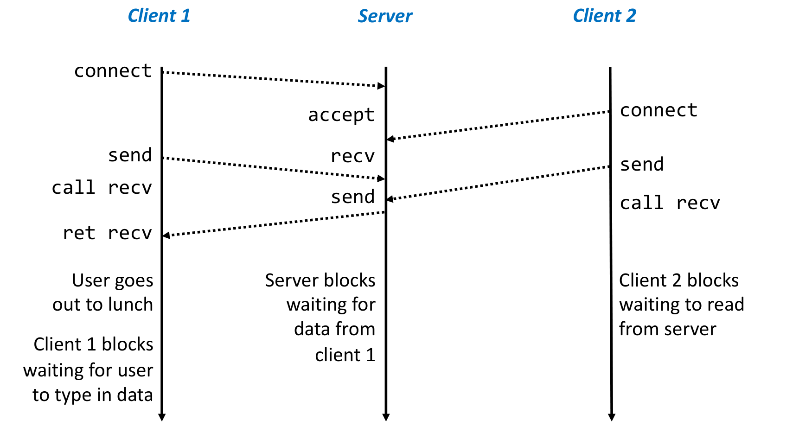
recv에서 막히고(Server blocks waiting for data from client 1), 그사이 연결하고 데이터를 보낸 Client 2는 서버의 응답을 기다리며 막힙니다(Client 2 blocks waiting to read from server). 세 흐름의 세로선이 아무 화살표 없이 바닥까지 이어지는 것은 세 흐름 모두 더는 진행하지 못한다는 뜻이며, 자리를 비운 사용자 한 명이 다른 모든 클라이언트의 서비스를 멈춰 세운다는 것이 이 그림의 요점입니다.echo 클라이언트는 사용자가 입력한 줄을 보내고 메아리를 받은 다음, 사용자의 다음 입력을 기다립니다(4.1절 그림의 call fgets). 사용자가 자리를 비우면 다음 일이 차례로 일어납니다.
| 흐름 | 멈춘 곳 | 기다리는 것 |
|---|---|---|
| Client 1 | 표준 입력 읽기 | 사용자가 다음 줄을 입력하기 |
| Server | Client 1 연결의 recv |
Client 1이 다음 데이터를 보내기 |
| Client 2 | 자기 연결의 recv |
서버가 응답하기 |
- 서버는 CPU를 전혀 쓰지 않고 그저 기다리고 있을 뿐인데도 Client 2를 처리하지 못합니다. 서버의 유일한 제어 흐름이 Client 1 연결의
recv안에 붙들려 있기 때문입니다. - 문제는 서버의 처리 능력이 아니라 구조에 있습니다. 서버가 아무리 빨라도, 흐름이 하나인 한 그 흐름을 붙잡는 클라이언트 하나가 모두를 멈춰 세웁니다. 악의를 가진 클라이언트라면 연결만 열어 두고 아무것도 보내지 않는 것만으로 서버를 마비시킬 수 있습니다.
동시성 서버(concurrent server)는 여러 동시 흐름을 써서 여러 클라이언트를 동시에 섬깁니다. 클라이언트마다 흐름을 하나씩 두면, 한 클라이언트 때문에 막히는 것은 그 클라이언트를 맡은 흐름뿐이고 다른 흐름들은 계속 자기 클라이언트를 처리합니다. 1.6절에서 처리 줄을 하나에서 둘로 늘린 것과 같은 발상입니다.
3. 동시성 모델 (Concurrency Models)
이 장의 구분 슬라이드에는 1.6절의 그림, 즉 요청들을 두 처리 줄에 나누어 맡기는 그림이 실려 있습니다. 문제는 그 “두 번째 줄”을 무엇으로 만드느냐입니다.
3.1 동시 흐름 만들기 (Creating Concurrent Flows)
서버가 여러 클라이언트를 동시에 다룰 수 있게 하는 방법은 세 가지입니다.
- 프로세스 (Processes)
- 커널이 여러 논리 흐름을 자동으로 번갈아 실행(interleave)합니다.
- 흐름마다 자기만의 사적인(private) 주소 공간을 가집니다.
- 스레드 (Threads)
- 커널이 여러 논리 흐름을 자동으로 번갈아 실행합니다.
- 모든 흐름이 같은 주소 공간을 공유합니다.
select()를 이용한 I/O 다중화 (I/O multiplexing withselect())- 프로그래머가 직접 여러 논리 흐름을 번갈아 실행합니다.
- 모든 흐름이 같은 주소 공간을 공유합니다.
- 더 낮은 수준의 시스템 추상화에 기댑니다.
| 모델 | 흐름을 번갈아 실행하는 주체 | 주소 공간 | 이 단원에서 |
|---|---|---|---|
| 프로세스 | 커널 (자동) | 흐름마다 따로 | 4장 |
| 스레드 | 커널 (자동) | 모든 흐름이 공유 | 20강 |
| I/O 다중화 | 프로그래머 (직접) | 모든 흐름이 공유 (프로세스가 하나뿐) | 요약(5장)에서 다시 언급 |
세 모델을 두 질문으로 나누어 보면 차이가 선명해집니다.
- 누가 흐름을 바꾸는가? 프로세스와 스레드에서는 13강 2장의 문맥 교환을 커널이 알아서 해 줍니다. 한 흐름이
recv에서 막히면 커널이 다른 흐름을 실행하므로, 프로그래머는 각 흐름을 2.1절처럼 “한 클라이언트만 상대하는 순차 코드”로 짜면 됩니다. I/O 다중화에서는 프로세스도 제어 흐름도 실제로는 하나뿐입니다. 프로그램이select()로 여러 디스크립터를 한꺼번에 지켜보다가 데이터가 준비된 연결만 골라 처리하고, 클라이언트마다 “어디까지 처리했는지”를 직접 기록해 두었다가 이어 갑니다. 17강 2.17절이 “더 나은 방법”으로 꼽은 이벤트 기반 프로그래밍(event-driven programming)이 이것입니다. - 무엇을 공유하는가? 프로세스는 주소 공간이 분리되어 있어 흐름끼리 실수로 자료를 망가뜨릴 수 없는 대신 자료를 나누기 어렵고(4.6절), 스레드와 I/O 다중화는 모든 흐름이 같은 메모리를 보므로 자료를 나누기는 쉽지만 1.9절의 경쟁을 조심해야 합니다.
- “더 낮은 수준의 시스템 추상화”: I/O 다중화는 프로세스나 스레드처럼 운영체제가 제공하는 “흐름” 추상화를 쓰지 않고, 디스크립터가 읽기 · 쓰기 준비가 되었는지 알려 주는
select()같은 더 낮은 수준의 기능 위에서 동시성을 프로그래머가 직접 조립한다는 뜻으로 읽힙니다.
이 강의(Part I)는 첫째 모델인 프로세스를, 20강(Part II)은 둘째 모델인 스레드를 다룹니다.
4. 동시 프로세스 (Concurrent Processes)
3장의 세 모델 가운데 첫째, 프로세스 기반 동시성 서버입니다. 13강의 fork, 13 · 15강의 좀비 수확과 SIGCHLD, 17강의 듣기 · 연결 디스크립터가 모두 이 장에서 한데 모입니다. 구분 슬라이드에는 4.1절의 시간 흐름 그림이 실려 있습니다.
4.1 다중 프로세스 동시성 서버 (Concurrent Servers: Multiple Processes)
- 클라이언트마다 별도의 프로세스를 띄웁니다(Spawn separate process for each client).
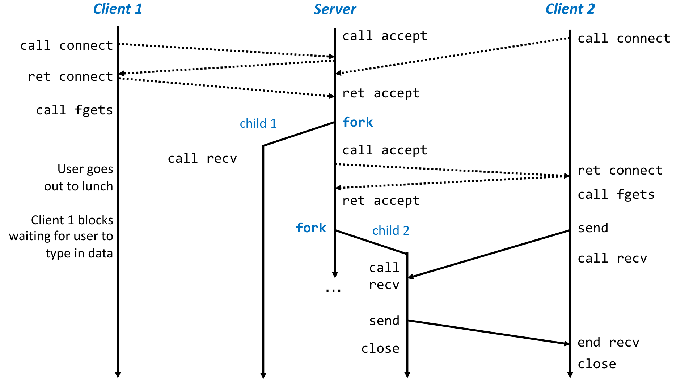
call accept로 기다리는 동안 Client 1과 Client 2가 거의 동시에 call connect합니다. Client 1의 요청에는 점선 화살표 세 개가 오가며 곧바로 연결이 맺어져 Client 1의 ret connect와 서버의 ret accept가 이루어지고, 같은 무렵 서버에 닿은 Client 2의 요청은 서버가 다시 accept를 부를 때까지 기다립니다. 서버는 곧바로 fork해 Client 1의 연결을 child 1에게 맡기고, child 1은 call recv로 Client 1의 데이터를 기다립니다. Client 1은 call fgets로 사용자 입력을 기다리다가 사용자가 자리를 비워 막히지만(User goes out to lunch, Client 1 blocks waiting for user to type in data), 이때 막히는 것은 Client 1과 child 1뿐입니다. 서버가 다시 call accept로 돌아오면 남은 두 점선 화살표가 오가며 Client 2의 연결이 마저 맺어지고(Client 2의 ret connect, 서버의 ret accept), 서버는 두 번째 fork로 child 2를 만듭니다. Client 2가 send한 데이터를 child 2가 recv로 받아 send로 되돌려 주면(실선 화살표) Client 2의 recv가 돌아옵니다(그림의 end recv). 그 뒤 child 2와 Client 2는 각각 close하고, 서버의 세로선 아래의 점 세 개는 서버가 계속 다음 연결을 받는다는 뜻입니다. 한 클라이언트가 멈춰도 그 클라이언트를 맡은 자식만 멈출 뿐 다른 클라이언트는 계속 서비스를 받는다는 것이 이 그림의 요점입니다.그림을 단계별로 따라가 보겠습니다.
| 단계 | 서버(부모) | 자식 | 클라이언트 |
|---|---|---|---|
| ① 연결 | call accept로 기다리다 Client 1의 연결로 ret accept |
— | Client 1과 Client 2가 거의 동시에 call connect, Client 1만 곧바로 ret connect |
| ② 위임 | fork로 child 1을 만들고 곧바로 다시 call accept |
child 1이 call recv로 Client 1의 데이터를 기다림 |
Client 1은 call fgets로 사용자 입력을 기다림 |
| ③ 사용자 부재 | 영향 없음 | child 1만 recv에서 막힘 |
Client 1의 사용자가 점심을 먹으러 감 |
| ④ 둘째 연결 | 다시 call accept해 기다리던 Client 2의 연결을 ret accept로 받고 fork로 child 2를 만듦 |
— | Client 2가 그제야 ret connect 후 call fgets |
| ⑤ 서비스 | 계속 다음 accept (…) |
child 2가 recv → send → close |
Client 2가 send → call recv → 응답을 받음 → close |
- 2.3절에서 모두를 멈춰 세웠던 “점심 먹으러 간 사용자”가 이번에는 child 1 하나만 멈춰 세웁니다. 부모는
accept만 되풀이하므로 Client 1과 상관없이 새 연결을 받고, Client 2는 자기를 맡은 child 2에게서 곧바로 응답을 받습니다. - Client 2 쪽의 end recv는 다른 슬라이드의 ret recv와 같은 뜻, 즉
recv가 돌아온 시점입니다. - 연결을 맺는 점선 화살표는 클라이언트마다 세 개(요청 → 수락 → 확인)입니다. 18강 2.5절에서 본 TCP의 3방향 핸드셰이크입니다. 이 그림은 맨 처음 서버에 닿은 Client 2의 요청이 서버의 두 번째
call accept때에야 수락되어 그제야connect가 돌아오는 것처럼 그렸지만, 2.2절에서 보았듯 연결 설정은 커널이accept호출과 상관없이 마무리하므로 실제로는 서버가accept를 부르기 전에도connect가 돌아올 수 있습니다.
4.2 다시 보기: 반복 echo 서버 (Review: Iterative Echo Server)
프로세스 기반 서버의 코드를 보기 전에, 비교할 출발점인 반복 서버의 코드를 먼저 봅니다. 슬라이드에서 굵게 강조된 줄은 반복문(while (1))과 accept, run_instance이며, 오른쪽의 설명 상자는 각각 “연결 요청을 받아들인다(Accept connection request)”와 “클라이언트가 끝날 때까지 echo 요청을 처리한다(Handle echo requests until client terminates)”입니다. 오른쪽 주석은 이 글에서 덧붙인 것입니다.
/// @brief main server routine accepting new connections.
/// Calls run_instance() for every client and blocks until the client exits.
/// @param listen_fd listening socket
void run_server(int listen_fd)
{
while (1) {
int client_fd;
struct sockaddr client; // 클라이언트의 소켓 주소를 받을 자리
socklen_t clientlen = sizeof(client);
client_fd = accept(listen_fd, &client, &clientlen); // 연결 요청을 받아들인다
if (client_fd > 0) {
printf(" connection from "); dump_sockaddr(&client); printf("\n");
run_instance(client_fd); // 이 클라이언트가 끝날 때까지 여기서 머문다
close(client_fd); // 연결을 닫고 다음 accept로
} else {
// print error message and abort on any error
perror("accept");
break;
}
}
}run_server는 이미 준비된 듣기 디스크립터listen_fd를 받아 연결을 하나씩 받습니다.accept가 돌려주는client_fd가 17강 2.10절의 연결 디스크립터입니다.run_instance(echo 요청을 처리하는 함수)와dump_sockaddr(소켓 주소를 출력하는 함수)는 슬라이드에 나오지 않는 강의 코드의 다른 부분입니다.- 반복 서버인 이유:
run_instance가 클라이언트가 끝날 때까지 돌아오지 않으므로, 그동안while반복은 다음accept로 가지 못합니다. 2.3절의 결함이 이 한 줄에 들어 있습니다.
슬라이드의 요점과는 별개로, 코드에서 눈여겨 둘 만한 세부 사항이 두 가지 있습니다.
accept는 실패하면 −1을 돌려주고, 0도 올바른 디스크립터 번호입니다. 그래서 정확한 성공 검사는client_fd >= 0입니다. 표준 입력이 열려 있는 보통의 프로세스에서는accept가 0을 돌려줄 일이 없어> 0으로도 실제 문제는 거의 생기지 않습니다.struct sockaddr는 16바이트로, IPv4 주소(struct sockaddr_in, 16바이트)는 담지만 IPv6 주소(struct sockaddr_in6, 28바이트)는 다 담지 못합니다. IPv6 연결을 받는 서버라면accept가 주소를 잘라서 채우고clientlen에 원래 길이를 적어 돌려주므로, 교재 CS:APP처럼 어떤 주소든 담을 수 있는struct sockaddr_storage(이 Mac과 리눅스에서 128바이트)를 쓰는 편이 안전합니다.
4.3 프로세스 기반 동시성 echo 서버 (Process-Based Concurrent Echo Server)
4.3.1 클라이언트마다 fork하기
반복 서버를 프로세스 기반 동시성 서버로 바꾸는 데 필요한 것은 accept 뒤의 fork와 그에 따른 뒷정리뿐입니다. 슬라이드의 생략 기호 …는 주석으로 바꾸어 옮겼고, 오른쪽 주석은 이 글에서 덧붙인 것입니다. 슬라이드의 설명 상자는 “클라이언트마다 별도의 프로세스를 fork한다(Fork separate process for each client)”와 “서로 다른 클라이언트 처리기 사이의 통신은 전혀 허용하지 않는다(Does not allow any communication between different client handlers)”입니다.
/// @brief main server routine accepting new connections. Forks a new
/// instance for every client and calls run_instance() on it.
/// @param listen_fd listening socket
void run_server(int listen_fd)
{
// register signal handler
if (signal(SIGCHLD, reaper) == SIG_ERR) { /* … */ } // 자식이 끝날 때마다 reaper 실행 (4.3.2절)
while (1) {
/* … */ // (슬라이드에서 생략) cfd, client, clientlen 선언 등
cfd = accept(listen_fd, &client, &clientlen);
if (cfd > 0) {
printf(" connection from "); dump_sockaddr(&client); printf("\n");
if (fork() == 0) { // ---- 자식: 이 클라이언트 전담 ----
// close listening socket in client & set sock_fd to cfd for close at exit
close(listen_fd); // 자식은 새 연결을 받지 않는다
sock_fd = cfd;
run_instance(sock_fd); // 이 클라이언트가 끝날 때까지 서비스
exit(EXIT_SUCCESS); // 절대 부모의 while로 돌아가지 않는다
}
close(cfd); // ---- 부모: 자기 몫의 연결 디스크립터를 닫는다
} else { /* … */ } // (슬라이드에서 생략) accept 실패 처리
}
}4.2절의 반복 서버와 달라진 곳은 세 군데입니다.
| 달라진 곳 | 코드 | 이유 |
|---|---|---|
| ① 핸들러 등록 | signal(SIGCHLD, reaper) |
자식이 끝날 때마다 좀비를 수확하기 위해서입니다(4.3.2절) |
| ② 자식의 일 | close(listen_fd) → run_instance → exit |
자식은 연결 하나만 맡으므로 듣기 디스크립터가 필요 없고, 서비스를 마치면 그 자리에서 끝납니다 |
| ③ 부모의 일 | close(cfd) 후 곧바로 다음 accept |
연결은 자식에게 넘겼으므로 부모는 자기 몫의 사본을 닫고 새 연결을 받으러 갑니다(4.5절) |
exit이 꼭 있어야 하는 이유: 자식은fork시점의 부모를 그대로 복사한 프로세스이므로,run_instance가 돌아온 뒤exit이 없으면 자식도if블록을 빠져나가close(cfd)를 하고while의 처음으로 돌아갑니다. 그러면 이미 닫은listen_fd로accept를 부르다 실패해 오류 처리로 빠집니다. 자식이 부모의 반복문을 실행하는 일이 없도록, 자식의 경로는 반드시exit으로 끝나야 합니다.sock_fd = cfd: 주석(“종료할 때 닫도록 sock_fd를 cfd로 정한다”)으로 보아,sock_fd는 프로그램이 끝날 때 정리할 소켓을 가리키는 전역 변수로 보입니다. 부모에서는 듣기 소켓을 가리키던 것을, 듣기 소켓을 닫은 자식에서는 연결 소켓을 가리키도록 바꾸어 두는 것입니다. 슬라이드도 이 줄을 흐리게 표시해 부차적인 부분임을 나타냅니다.- “통신을 전혀 허용하지 않는다”: 자식들은 서로 다른 주소 공간을 가지므로, 한 자식이 바꾼 변수를 다른 자식은 볼 수 없습니다. 장점이자 단점인 이 성질은 4.6절에서 다시 봅니다.
이 글을 쓰며 슬라이드의 run_server와 4.3.2절의 reaper에 run_instance(받은 바이트를 그대로 돌려보내는 반복문)와 main(듣기 소켓 준비)을 채워 macOS에서 실행해 보았습니다. Client 1이 연결을 붙든 채 쉬는 동안 연결한 Client 2는 약 1밀리초 만에 메아리를 받았습니다. 2.2절의 반복 서버에서는 같은 상황에서 약 3초를 기다려야 했습니다.
부모는 fork 직전에 printf로 접속 기록을 남깁니다. 서버의 표준 출력이 터미널이면 줄 단위로 버퍼링되어 \n에서 바로 비워지지만, ./server > log.txt처럼 파일로 보내면 완전 버퍼링되어 버퍼에 쌓인 채로 fork됩니다. 그러면 자식은 아직 비워지지 않은 부모의 버퍼까지 그대로 물려받고, exit할 때 그 내용을 파일에 씁니다. 13강 4.7절에서 출력을 파이프로 보내면 같은 줄이 여러 번 찍힐 수 있다고 한 것과 같은 현상입니다. 이 글을 쓰며 macOS에서 연결 세 개를 차례로 받은 뒤 서버를 종료해 보니, 기록 파일에 세 줄이 아니라 여섯 줄(첫째 자식이 1번 기록을, 둘째가 1 · 2번을, 셋째가 1 · 2 · 3번을)이 남았고, 정작 부모의 버퍼는 시그널로 종료되어 끝내 비워지지 않았습니다. fork 직전에 fflush(stdout)을 부르면 자식이 물려받는 버퍼가 비어 있으므로 이 문제가 사라집니다.
4.3.2 좀비 자식 수확하기
- 중요: 좀비 자식을 하나도 빠짐없이 수확해야 합니다(must not forget to reap all zombie children).
/// @brief signal handler for SIGCHLD, reaps all exited children
/// @param signal signal ID (==SIGCHLD)
void reaper(int signal)
{
while (waitpid(-1, 0, WNOHANG) > 0) ; // 끝난 자식이 남아 있는 동안 계속 수확
}15강 5.3절의 “SIGCHLD의 올바른 처리”와 같은 구조입니다.
-1: 자식 중 아무나 기다립니다. 어느 클라이언트의 자식이 먼저 끝날지 모르기 때문입니다.0(상태 포인터): 자식의 종료 상태는 필요 없으므로 받지 않습니다.WNOHANG: 아직 끝나지 않은 자식(다른 클라이언트를 처리하는 중인 자식)이 있어도 기다리지 않고 곧바로 0을 돌려받습니다. 이 옵션이 없으면 핸들러가 살아 있는 자식이 끝날 때까지 부모를 붙잡아, 부모가 새 연결을 받지 못합니다.while: 15강 5.2절에서 본 대로 시그널은 큐에 쌓이지 않으므로, SIGCHLD 하나는 “적어도 한 자식이 끝났다”는 뜻일 뿐입니다. 거의 동시에 끝난 여러 자식의 SIGCHLD가 하나로 합쳐질 수 있으므로, 핸들러가 한 번 실행될 때 끝난 자식을 모두 수확해야 합니다.
같은 서버에서 SIGCHLD 핸들러 등록만 뺀 판을 macOS에서 실행해 연결 세 개를 처리하게 해 보니, 세 연결이 모두 끝난 뒤에도 서버의 자식 세 개가 ps에 좀비(상태 Z)로 남아 있었습니다. 핸들러를 등록한 원래 판에서는 하나도 남지 않았습니다.
accept를 끊을 수 있습니다
부모는 대부분의 시간을 accept에서 막힌 채 보내므로, 자식이 끝나서 보내는 SIGCHLD는 거의 언제나 accept 도중에 도착합니다. 핸들러가 끝난 뒤 accept가 다시 시작되는지는 핸들러를 등록할 때 SA_RESTART가 켜져 있느냐에 달려 있습니다(15강 5.4절). macOS와, 기능 검사 매크로가 기본값인 리눅스 glibc의 signal()은 BSD 의미를 따라 SA_RESTART를 켜 주므로 슬라이드의 코드는 문제없이 돕니다. 그러나 SA_RESTART 없이 등록되면(sigaction에서 sa_flags = 0, 또는 15강 4.8절에서 본 것처럼 gcc -std=c11 같은 엄격한 표준 모드에서 signal()이 System V 의미로 바뀌는 경우) accept는 −1을 돌려주고 errno는 EINTR이 됩니다. 4.2절처럼 오류가 나면 break하는 서버라면 첫 클라이언트가 끝나는 순간 서버도 끝납니다. 실제로 macOS에서 sa_flags = 0으로 등록해 보니 첫 자식이 끝나자 accept: Interrupted system call이 찍히며 서버의 반복문이 끝났고, 이어서 연결하려던 클라이언트는 연결을 거부당했습니다. sigaction에 SA_RESTART를 주거나, 오류 처리에서 errno == EINTR이면 continue하도록 고쳐 두는 편이 안전합니다. 덧붙여 살아 있는 자식이 하나도 남지 않은 상태에서는 루프의 마지막 waitpid가 −1과 ECHILD를 돌려주며 errno를 덮어쓰므로, 15강 5.9절의 지침 ③대로 진입할 때 errno를 저장했다가 나갈 때 복원하는 것이 정석입니다.
4.4 프로세스 실행 모델 (Process Execution Model)
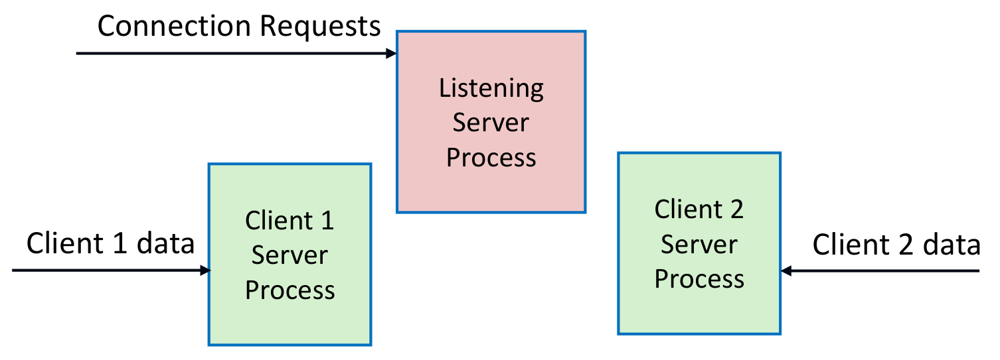
- 각 클라이언트는 독립된 프로세스가 처리합니다.
- 그 프로세스들 사이에는 공유 상태가 없습니다.
- 부모와 자식 모두
listen_fd와client_fd의 사본을 가집니다.- 부모는
client_fd를 닫아야 합니다. - 자식은
listen_fd를 닫아야 합니다.
- 부모는
두 디스크립터의 사본이 왜 양쪽에 다 있는지는 13강 4.4절의 그림으로 설명됩니다. fork는 부모의 디스크립터 테이블을 복사하므로, accept 직후에 fork하면 자식의 테이블에도 listen_fd와 client_fd가 그대로 생기고, 두 프로세스의 같은 번호는 열린 파일 테이블의 같은 항목을 가리킵니다. 그런데 부모가 쓰는 것은 listen_fd뿐이고 자식이 쓰는 것은 client_fd뿐이므로, 각자 쓰지 않는 사본을 닫아 그림처럼 역할을 깔끔하게 나눕니다. 슬라이드 28번의 코드는 연결 디스크립터를 cfd라고 불렀고, 이 슬라이드와 다음 슬라이드는 27번 코드처럼 client_fd라고 부릅니다. 같은 것입니다.
4.5 프로세스 기반 설계의 구현 수칙 (Implementation Must/Should-Dos With Process-Based Designs)
- 듣기 서버 프로세스는 좀비 자식을 수확해야 합니다.
- 치명적인 메모리 누수를 피하기 위해서입니다.
- 듣기 서버 프로세스는 자기 몫의
client_fd를 닫아야 합니다.- 커널은 소켓 · 열린 파일마다 참조를 셉니다.
fork뒤에는 refcnt(client_fd) = 2입니다.- refcnt(
client_fd) == 0이 될 때까지 연결은 닫히지 않습니다.
- fork된 echo 서버 프로세스는 자기 몫의
listen_fd를 닫는 편이 좋습니다.
세 수칙 가운데 앞의 둘은 반드시(must), 마지막은 되도록(should)입니다. 차이가 어디서 오는지 하나씩 보겠습니다.
① 좀비 수확 (must). 끝난 자식은 부모가 수확할 때까지 PID와 종료 상태를 담은 커널의 프로세스 항목을 붙든 좀비로 남습니다(13강 5.4절). 하나하나는 작지만 서버는 몇 달씩 돌며 연결마다 자식을 만들므로, 좀비가 쌓이면 결국 사용자당 프로세스 수 제한이나 PID 공간에 걸려 fork가 실패하고 서버는 더는 클라이언트를 받지 못합니다. 슬라이드가 “치명적”이라고 부르는 이유입니다.
② 부모의 client_fd 닫기 (must). 13강 4.4절의 표대로 열린 파일 테이블의 항목마다 참조 횟수(refcnt)가 있고, close는 그 횟수를 하나 줄일 뿐입니다. 커널은 참조 횟수가 0이 되어야 그 항목을 해제하며, 소켓이라면 그때 비로소 연결을 닫는 절차(상대에게 연결 종료 알림을 보내는 것)를 시작합니다.
| 시점 | 부모가 닫는 경우 | 부모가 닫지 않는 경우 |
|---|---|---|
accept 직후 |
1 | 1 |
fork 직후 (부모와 자식에 사본) |
2 | 2 |
부모의 close(cfd) |
1 | 2 그대로 |
자식의 exit (커널이 자식의 디스크립터를 모두 닫음) |
0 → 연결이 닫힘 | 1 → 연결이 열린 채 남음 |
부모가 닫지 않으면 두 가지 일이 생깁니다.
- 디스크립터 누수: 연결 하나마다 부모의 디스크립터가 하나씩 영원히 쌓입니다. 프로세스가 동시에 열 수 있는 디스크립터 수에는 한도가 있으므로, 결국
accept가EMFILE로 실패해 서버가 새 연결을 받지 못합니다. - 연결이 끝나지 않음: echo처럼 클라이언트가 먼저 닫는 프로토콜에서는 서버 쪽 소켓이 “상대는 닫았지만 나는 아직 안 닫은” 상태로 남습니다. 서버가 응답을 다 보낸 뒤 연결을 닫는 것으로 응답의 끝을 알리고 클라이언트는 EOF가 올 때까지 읽는 프로토콜이라면 더 나쁩니다. 자식이 응답을 다 보내고 끝나도 연결이 닫히지 않으므로, 클라이언트는 EOF를 영영 받지 못하고 기다리게 됩니다.
이 글을 쓰며 부모의 close(cfd)만 뺀 판을 macOS에서 실행해 클라이언트 세 개를 차례로 처리하게 하니, 세 클라이언트가 모두 연결을 닫은 뒤에도 lsof에 부모의 디스크립터 4 · 5 · 6번이 CLOSE_WAIT(상대가 연결을 닫았고 이쪽이 닫기를 기다리는 상태)로 남아 있었습니다. 원래 판에서는 듣기 소켓 하나만 남았습니다.
close는 연결을 끊지 않습니다. 참조 횟수가 0이 될 때 끊깁니다
fork된 디스크립터는 같은 열린 파일 항목을 가리키는 사본이므로, 한 프로세스의 close는 그 프로세스의 사본을 없앨 뿐 연결 자체를 끊지 않습니다. 연결은 그 항목을 가리키는 마지막 사본이 닫혀 참조 횟수가 0이 될 때 닫힙니다. 그래서 연결을 넘겨받은 자식이 다 쓰고 닫는 것만으로는 부족하고, 넘겨준 부모도 자기 사본을 반드시 닫아야 합니다. 17강 2.17.1절에서 “accept 뒤에 fork”하는 구조를 소개하며 부모가 연결 디스크립터를 반드시 닫아야 한다고 한 것이 이 규칙입니다.
③ 자식의 listen_fd 닫기 (should). 30번 슬라이드(4.4절)는 자식도 listen_fd를 닫아야 한다(must)고 적었지만, 이 슬라이드는 한 단계 낮추어 닫는 편이 좋다(should)고 적습니다. 둘을 가르는 기준은 닫지 않았을 때 무엇이 깨지느냐입니다. 듣기 소켓도 같은 참조 횟수 규칙을 따르므로, 자식이 사본을 쥐고 있으면 듣기 소켓의 참조 횟수에는 살아 있는 자식 수만큼이 더해집니다. 자식은 새 연결을 받을 일이 없으므로 당장 틀린 동작은 생기지 않습니다. 그래서 “must”가 아니라 “should”입니다. 그러나 부모가 먼저 죽거나 듣기 소켓을 닫더라도 자식이 하나라도 살아 있으면 듣기 소켓은 닫히지 않습니다. 커널은 그 소켓으로 들어오는 연결 요청을 대기열이 찰 때까지 계속 받아 쌓지만 accept할 프로세스는 없으므로, 그동안 접속한 클라이언트는 연결에 성공하고도 아무 응답을 받지 못합니다. 쓰지 않는 자원은 바로 놓는 것이 안전합니다.
4.6 프로세스 기반 설계의 장단점 (Pros and Cons of Process-Based Designs)
| 슬라이드의 항목 | 풀이 | |
|---|---|---|
| + | 여러 연결을 동시에 처리합니다 | 2.3절의 결함이 사라집니다. 한 클라이언트가 멈추면 그 클라이언트의 자식만 멈춥니다 |
| + | 깔끔한 공유 모델: 디스크립터(공유 안 함), 파일 테이블(공유함), 전역 변수(공유 안 함) | 무엇이 공유되고 무엇이 공유되지 않는지가 분명합니다(아래 표) |
| + | 단순하고 직관적입니다 | 반복 서버에 fork · exit · close 몇 줄과 핸들러 하나를 더하면 됩니다(4.3절) |
| − | 프로세스 제어에 추가 부담이 듭니다 | 연결마다 fork, 종료, 수확이 일어나고, 프로세스 사이의 문맥 교환도 늘어납니다 |
| − | 프로세스끼리 데이터를 나누기가 간단하지 않습니다 | IPC(프로세스 간 통신) 메커니즘이 필요합니다. 예: FIFO(이름 있는 파이프), System V 공유 메모리와 세마포어 |
“깔끔한 공유 모델”의 세 항목은 13강 4.3–4.6절에서 본 fork의 성질 그대로입니다.
| 항목 | 공유? | 이유 |
|---|---|---|
| 디스크립터 (디스크립터 테이블) | 아니요 | fork 때 복사되므로 그 뒤로는 각자의 것입니다. 한쪽의 close가 다른 쪽에 영향을 주지 않습니다. 부모와 자식이 각자 닫아야 하는 이유가 이것입니다 |
| 파일 테이블 (열린 파일 테이블 항목) | 예 | 두 프로세스의 디스크립터가 같은 항목을 가리키므로 파일 위치 같은 상태를 함께 씁니다(13강 4.5절의 실험). 참조 횟수가 있는 곳도 여기입니다 |
| 전역 변수 (주소 공간) | 아니요 | 주소 공간이 분리되어 있어 한쪽이 바꾼 값을 다른 쪽은 볼 수 없습니다(13강 4.3절의 실험, 4.6절의 쓰기 시 복사) |
단점 두 가지도 구체적으로 보면 다음과 같습니다.
- 프로세스 제어의 부담: 연결 하나를 처리하려고 프로세스 하나를 통째로 만들고 없애는 비용은, 연결이 짧고 많을수록 커집니다. 18강 3.4절에서 본 FastCGI가 작업자 프로세스를 미리 fork해 두고 재사용하는 것도 이 비용을 줄이기 위해서입니다.
- IPC의 필요: 예를 들어 “지금까지 처리한 요청의 총수”를 세려면, 자식들이 전역 변수를 함께 고칠 수 없으므로 운영체제가 제공하는 통로를 따로 써야 합니다. FIFO(이름 있는 파이프)는 파일 시스템에 이름을 가진 파이프로, 부모 자식 관계가 아닌 프로세스끼리도 열어서 바이트를 주고받을 수 있습니다. System V 공유 메모리는 같은 메모리 영역을 여러 프로세스의 주소 공간에 함께 붙이는 방법이고, System V 세마포어는 그런 공유 자료에 차례로 접근하도록 조율하는 데 쓰는 카운터입니다. 세마포어는 21강에서 동기화의 핵심 도구로 다시 등장합니다.
두 단점은 결국 “흐름마다 주소 공간이 따로 있다”는 한 가지 성질에서 나옵니다. 둘째 모델인 스레드는 모든 흐름이 주소 공간을 공유하게 해 이 두 단점을 덜지만, 그 대가로 4.3.1절의 “통신을 전혀 허용하지 않는다”는 안전장치를 잃고 1.9절의 경쟁을 정면으로 마주하게 됩니다. 이것이 20강과 21강의 주제입니다.
5. 요약 (Module Summary)
5.1 요약 (Concurrent Programming)
Module Summary 구분 슬라이드 뒤의 요약은 다음과 같습니다.
- 동시성 프로그래밍 (Concurrent programming)
- 병렬 제어 흐름(parallel control flows)
- 데이터 병렬성, 작업 병렬성
- 고전적인 문제 (Classic problems)
- 경쟁 (Races)
- 교착 상태 (Deadlock)
- 기아 상태 (Starvation)
- 동시성 모델 (Concurrency Models)
- 동시 프로세스 (Concurrent processes)
- 동시 스레드 (Concurrent threads)
- I/O 다중화 (I/O multiplexing)
본문과 대조하면 다음과 같습니다.
- 첫 묶음은 1.1–1.7절입니다. 한 프로그램 안의 여러 흐름이 같은 계산을 데이터 조각별로 나누면 데이터 병렬성(1.2–1.4절), 서로 다른 요청을 나누면 작업 병렬성(1.5–1.6절)이었습니다.
- 둘째 묶음은 1.8–1.11절입니다. 세 문제는 모두 실행 순서를 프로그래머가 정할 수 없다는 데서 나오며, 경쟁과 교착 상태는 21강에서 동기화와 함께 다시 다룹니다.
- 셋째 묶음은 3.1절의 세 모델입니다. 이 강의는 그중 동시 프로세스(4장)를 다루었고, 동시 스레드는 20강의 주제입니다.
정리하며 (Closing Remarks)
이번 강의의 논증 사슬을 단계별로 압축하면 다음과 같습니다.
| 단계 | 내용 | 근거 |
|---|---|---|
| ① 동시성 프로그래밍 | 한 프로그램 안에 제어 흐름을 여럿 두는 것으로, 서로 독립적인 프로세스들의 실행 기간이 겹치는 운영체제 수준의 동시성과 다르다 | Concurrent Programming |
| ② 데이터 병렬성 | 같은 계산을 독립적인 데이터 덩어리로 나누어 흐름마다 맡기며, 벡터 덧셈은 연속 구간으로도 한 칸씩 번갈아서도 나눌 수 있다 | Data parallelism, vector addition, Different workload distributions possible |
| ③ 작업 병렬성 | 서로 다른 요청을 여러 흐름에 나누면, 처리할 일의 총량은 같아도 요청이 앞 요청 뒤에서 줄 서는 시간이 크게 줄어든다 | Task parallelism, Task parallelism: webserver |
| ④ 설계의 질문들 | 분배(정적 · 동적, 덩어리 크기), 분할(연속 · 교차), 작업 수, 데이터 의존성(번스타인 조건), 전역 · 지역 상태를 정해야 한다 | In both models, lots of interesting problems |
| ⑤ 어려움 | 가능한 실행 순서의 수가 조합적으로 폭발하므로 모두 따져 볼 수 없고, 경쟁 · 교착 상태 · 라이브락/기아 상태/공정성이 고전적 문제다 | Concurrent Programming is Hard! |
| ⑥ 경쟁 | fork 뒤 부모와 자식의 출력 순서는 스케줄링에 달려 있고, 드문 순서는 테스트에서 잘 드러나지 않는다 |
Races |
| ⑦ 교착 상태와 기아 상태 | 두 자원을 서로 다른 순서로 잠그면 서로의 해제를 기다리는 원이 생겨 함께 멈추고, 시스템이 진행되는 와중에 특정 흐름만 차례를 얻지 못하는 것이 기아 상태다 | Deadlock, Starvation |
| ⑧ 반복 서버의 결함 | 흐름이 하나인 반복 서버는 한 세션을 끝내야 다음 accept로 가므로, 사용자 하나가 자리를 비우면 서버와 다른 클라이언트가 모두 멈춘다 |
Iterative Echo Server, Iterative Servers, Fundamental Flaw of Iterative Servers |
| ⑨ 세 동시성 모델 | 프로세스(커널이 번갈아 실행, 사적 주소 공간), 스레드(커널, 공유 주소 공간), select() I/O 다중화(프로그래머, 공유 주소 공간) |
Creating Concurrent Flows |
| ⑩ 프로세스 기반 서버 | accept 뒤에 fork해 자식은 listen_fd를 닫고 서비스한 뒤 exit하고, 부모는 cfd를 닫고 다시 accept하므로 한 클라이언트가 멈춰도 그 자식만 멈춘다 |
Concurrent Servers: Multiple Processes, Process-Based Concurrent Echo Server, Process Execution Model |
| ⑪ 좀비 수확 | SIGCHLD 핸들러가 while과 waitpid(-1, 0, WNOHANG)으로 끝난 자식을 모두 수확해야 하며, 핸들러가 SA_RESTART 없이 등록되면 accept가 EINTR로 끊긴다 |
Process-Based Concurrent Echo Server |
| ⑫ 참조 횟수 | fork 뒤 연결 디스크립터의 참조 횟수는 2이고 연결은 0이 되어야 닫히므로 부모도 자기 사본을 닫아야 하며, 자식은 쓰지 않는 listen_fd를 닫는 편이 좋다 |
Implementation Must/Should-Dos With Process-Based Designs |
| ⑬ 장단점 | 동시 처리 · 깔끔한 공유 모델 · 단순함을 얻는 대신 프로세스 제어 부담과 IPC의 필요를 떠안으며, 둘 다 주소 공간이 따로라는 데서 나온다 | Pros and Cons of Process-Based Designs |
| ⑭ 요약 | 동시성 프로그래밍(데이터 · 작업 병렬성), 고전적 문제(경쟁 · 교착 상태 · 기아 상태), 동시성 모델(프로세스 · 스레드 · I/O 다중화) | Module Summary |